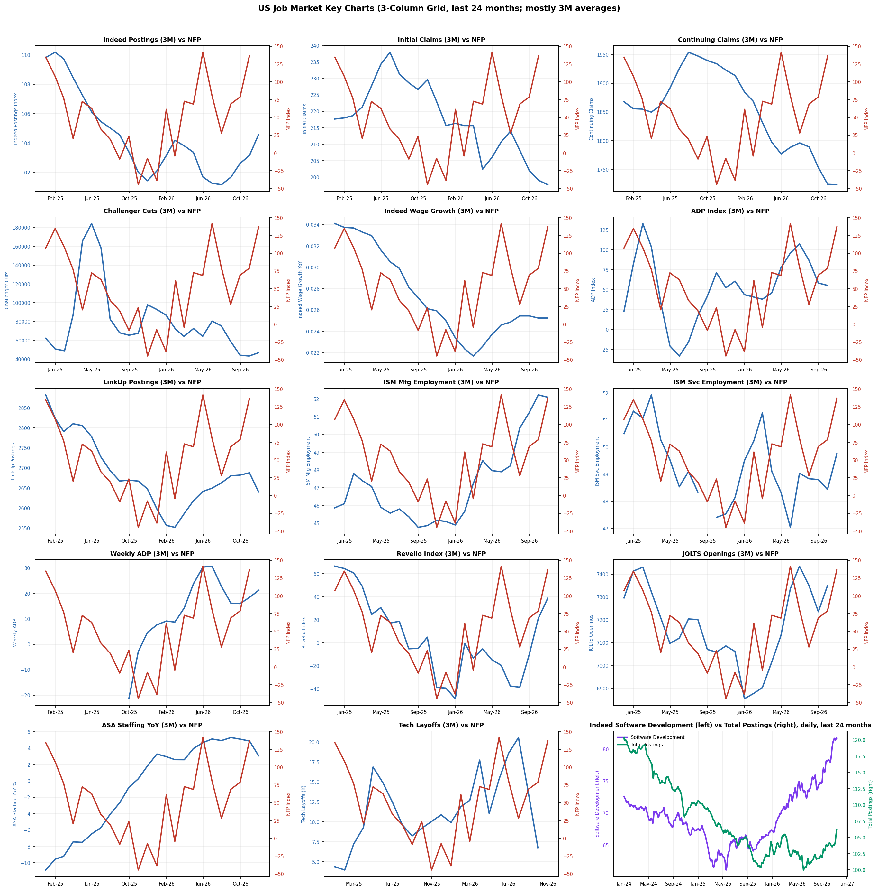

US Job Market Analysis
Latest data: 2026-11-22
Our NFP forecast is 45K — the high-frequency data we track shows a weaker trend than broker consensus.
October NFP surged to 165k from 60k, but November high-frequency signals are mixed-to-softer: claims and LinkUp/ASA deteriorated while Indeed postings and weekly ADP hiring firmed. The labor market still looks resilient versus early-2026 weakness, yet momentum into the next NFP print points to mean-reversion from October's outsized gain rather than another triple-digit beat.
How we arrive at this forecast (metric trends):
- NFP Index: 165.0 (Oct 2026) vs 60.0 (Sep 2026) - improving. Implication: October's surge raises the bar; November NFP likely mean-reverts lower unless private-sector breadth holds.
- ADP Index: 86.0 (Sep 2026) vs 36.0 (Aug 2026) - improving; ADP Index: 86 (Sep 2026) - 107 (October 2026 est.). Implication: Estimated October ADP strength supports a still-positive November NFP, but not a repeat of 165k.
- Initial Claims (K): 203 (Nov 2026) vs 191 (Oct 2026) - deteriorating. Implication: Firmer claims into the survey window argue for a softer November NFP print versus October.
- Jobless Claims / Continuing (K): 1,763 (Nov 2026) vs 1,693 (Oct 2026) - deteriorating. Implication: Rising continuing claims signal slower re-employment, capping November NFP upside.
- Indeed Postings: 106.2 (Nov 2026) vs 103.8 (Oct 2026) - improving. Implication: Demand rebound is a constructive offset and supports November NFP remaining clearly positive.
- LinkUp Postings: 2,565.5 (Nov 2026) vs 2,696.0 (Oct 2026) - deteriorating. Implication: Sharp posting drop is a downside risk for November payrolls if hiring freezes broaden.
- Indeed Wage Growth (%): 2.6 (Oct 2026) vs 2.4 (Sep 2026) - improving. Implication: Modest wage reacceleration implies labor demand not collapsing; consistent with mid-range November NFP, not a stall.
- Weekly ADP Hire (K): 21.0 (Nov 2026) vs 19.2 (Oct 2026) - improving. Implication: Hire flow near ~20k supports a roughly 60-90k November NFP trajectory rather than sub-50k weakness.
Data Analysis suggests NFP is likely below-consensus (AI-driven analysis)
- Monthly values — each cell shows the aggregated value for that month using the method specified in the "Method" column (e.g. Last = most recent reading within the month; Mean = average of all weekly readings; Sum = total for the month).
- Cell shading — green = stronger / more positive signal relative to the metric's own 16-month range; red = weaker signal. For negative indicators (Claims, Layoffs, Challenger) the colour scale is inverted so red = higher = worse.
- Corr (NFP) — Pearson correlation between each indicator series and the actual NFP print, computed over the 16 months shown. A value close to +1 means the indicator tends to move in the same direction as NFP; close to −1 means it moves inversely.
- Forecast NFP — a simple univariate linear regression fitted between the indicator and NFP over the same 16-month window. The latest month's indicator value is fed into that regression to produce a point estimate of NFP. This is a mechanical signal only — not a model forecast.
Monthly Matrix (raw monthly values)
| Metric / Stats | Method | Source | Apr 2026 | May 2026 | Jun 2026 | Jul 2026 | Aug 2026 | Sep 2026 | Oct 2026 | Nov 2026 | Corr (NFP) ↕ | Forecast NFP |
|---|---|---|---|---|---|---|---|---|---|---|---|---|
| NFP Index | Last (monthly release) | RDS bbg.v_labor (NFP TCH Index) Latest: 2026-10-31 | 148.0 | 63.0 | 31.0 | -10.0 | 186.0 | 60.0 | 165.0 | N/A | - | - |
| ADP Index | Last (monthly release) | RDS bbg.v_labor (ADP CHNG Index) Latest: 2026-09-30 | 105.0 | 122.0 | 95.0 | 44.0 | 36.0 | 86.0 | N/A | N/A | 0.16 | - |
| Initial Claims (K) | Last (most recent week) | RDS bbg.v_jobless (INJCJC Index) Latest: 2026-11-13 | 190.0 | 225.0 | 217.0 | 200.0 | 207.0 | 199.0 | 191.0 | 203.0 | -0.41 | 80 |
| Jobless Claims (K) | Last (most recent week) | RDS bbg.v_jobless (INJCSP Index) Latest: 2026-11-06 | 1758.0 | 1786.0 | 1821.0 | 1781.0 | 1765.0 | 1714.0 | 1693.0 | 1763.0 | -0.58 | 102 |
| Indeed Postings | Last (latest signal) | Indeed Hiring Lab (GitHub: aggregate_job_postings_US) Latest: 2026-11-13 | 102.4 | 100.4 | 101.0 | 102.1 | 101.9 | 103.8 | 103.8 | 106.2 | -0.14 | 8 |
| LinkUp Postings | Last (latest signal) | RDS bbg.v_labor (LKUP10KW / LKUP10KM Index) Latest: 2026-11-22 | 2638.9 | 2655.8 | 2653.7 | 2678.7 | 2709.1 | 2658.7 | 2696.0 | 2565.5 | 0.16 | 24 |
| Indeed Wage Growth (%) | Mean (monthly avg) | Indeed Wage Tracker (GitHub: posted-wage-growth-by-country, US) Latest: 2026-10-01 | 2.5 | 2.5 | 2.5 | 2.6 | 2.5 | 2.4 | 2.6 | N/A | 0.07 | - |
| Weekly ADP Hire (K) | Mean (monthly avg) | Bloomberg ADPUWKLY Index Latest: 2026-11-06 | 35.7 | 32.5 | 23.9 | 11.9 | 12.7 | 23.4 | 19.2 | 21.0 | 0.44 | 78 |
| Revelio Nonfarm Payroll | Last (monthly release) | RDS bbg.v_labor (REVLNFMS Index) Latest: 2026-10-31 | -23.5 | -62.0 | -27.0 | -26.5 | 22.8 | 67.6 | 26.0 | N/A | 0.62 | - |
| JOLTS Openings | Last (monthly release) | RDS bbg.v_labor (JOLTTOTL Index) Latest: 2026-09-30 | 7585.0 | 7537.0 | 7182.0 | 7335.0 | 7190.0 | 7523.0 | N/A | N/A | 0.29 | - |
| ISM Mfg (Emp) | Last (monthly release) | RDS bbg.v_labor (NAPMEMPL Index) Latest: 2026-10-31 | 46.4 | 48.6 | 49.7 | 52.8 | 51.2 | 52.7 | 52.4 | N/A | 0.31 | - |
| ISM Svc (Emp) | Last (monthly release) | RDS bbg.v_labor (NAPMNEMP Index) Latest: 2026-10-31 | 48.0 | 47.9 | 51.2 | 47.4 | 47.8 | 50.1 | 51.4 | N/A | -0.35 | - |
| ASA Staffing (YoY) | Mean then YoY | RDS bbg.v_jobless (ASA INDX Index) Latest: 2026-11-09 | 4.8 | 4.6 | 6.0 | 4.2 | 5.7 | 5.4 | 3.5 | 0.3 | 0.36 | -9 |
| Tech Layoffs (K) | Last month on chart | layoffs.fyi Recent Tech Layoffs (Employees Laid Off) Latest: 2026-09-30 | 5.1 | 24.2 | 26.5 | 11.0 | 3.6 | 5.7 | N/A | N/A | 0.02 | - |
| Challenger Cuts | Last (monthly release) | RDS bbg.v_labor (CHALTOTL Index) Latest: 2026-10-31 | 83387.0 | 97006.0 | 45849.0 | 33429.0 | 52881.0 | 43281.0 | 43994.0 | N/A | -0.19 | - |
3M Average Matrix (trailing 3-month average by row)
| Metric / Stats | Method | Source | Apr 2026 | May 2026 | Jun 2026 | Jul 2026 | Aug 2026 | Sep 2026 | Oct 2026 | Nov 2026 | Corr (NFP 3M) ↕ | Forecast NFP (3M avg) |
|---|---|---|---|---|---|---|---|---|---|---|---|---|
| NFP Index | Last (monthly release) | RDS bbg.v_labor (NFP TCH Index) Latest: 2026-10-31 | 68.7 | 141.7 | 80.7 | 28.0 | 69.0 | 78.7 | 137.0 | N/A | - | - |
| ADP Index | Last (monthly release) | RDS bbg.v_labor (ADP CHNG Index) Latest: 2026-09-30 | 77.3 | 96.0 | 107.3 | 87.0 | 58.3 | 55.3 | N/A | N/A | 0.54 | - |
| Initial Claims (K) | Last (most recent week) | RDS bbg.v_jobless (INJCJC Index) Latest: 2026-11-13 | 202.3 | 206.0 | 210.7 | 214.0 | 208.0 | 202.0 | 199.0 | 197.7 | -0.79 | 121 |
| Jobless Claims (K) | Last (most recent week) | RDS bbg.v_jobless (INJCSP Index) Latest: 2026-11-06 | 1797.3 | 1777.0 | 1788.3 | 1796.0 | 1789.0 | 1753.3 | 1724.0 | 1723.3 | -0.84 | 121 |
| Indeed Postings | Last (latest signal) | Indeed Hiring Lab (GitHub: aggregate_job_postings_US) Latest: 2026-11-13 | 103.3 | 101.7 | 101.3 | 101.2 | 101.7 | 102.6 | 103.2 | 104.6 | -0.08 | 36 |
| LinkUp Postings | Last (latest signal) | RDS bbg.v_labor (LKUP10KW / LKUP10KM Index) Latest: 2026-11-22 | 2618.1 | 2641.4 | 2649.5 | 2662.7 | 2680.5 | 2682.2 | 2687.9 | 2640.1 | 0.18 | 44 |
| Indeed Wage Growth (%) | Mean (monthly avg) | Indeed Wage Tracker (GitHub: posted-wage-growth-by-country, US) Latest: 2026-10-01 | 2.4 | 2.5 | 2.5 | 2.5 | 2.5 | 2.5 | 2.5 | N/A | -0.05 | - |
| Weekly ADP Hire (K) | Mean (monthly avg) | Bloomberg ADPUWKLY Index Latest: 2026-11-06 | 23.8 | 30.4 | 30.7 | 22.8 | 16.2 | 16.0 | 18.4 | 21.2 | 0.61 | 69 |
| Revelio Nonfarm Payroll | Last (monthly release) | RDS bbg.v_labor (REVLNFMS Index) Latest: 2026-10-31 | -14.6 | -19.5 | -37.5 | -38.5 | -10.2 | 21.3 | 38.8 | N/A | 0.56 | - |
| JOLTS Openings | Last (monthly release) | RDS bbg.v_labor (JOLTTOTL Index) Latest: 2026-09-30 | 7131.3 | 7336.3 | 7434.7 | 7351.3 | 7235.7 | 7349.3 | N/A | N/A | 0.58 | - |
| ISM Mfg (Emp) | Last (monthly release) | RDS bbg.v_labor (NAPMEMPL Index) Latest: 2026-10-31 | 48.0 | 47.9 | 48.2 | 50.4 | 51.2 | 52.2 | 52.1 | N/A | 0.68 | - |
| ISM Svc (Emp) | Last (monthly release) | RDS bbg.v_labor (NAPMNEMP Index) Latest: 2026-10-31 | 48.3 | 47.0 | 49.0 | 48.8 | 48.8 | 48.4 | 49.8 | N/A | -0.38 | - |
| ASA Staffing (YoY) | Mean then YoY | RDS bbg.v_jobless (ASA INDX Index) Latest: 2026-11-09 | 4.0 | 4.7 | 5.1 | 4.9 | 5.3 | 5.1 | 4.9 | 3.1 | 0.62 | 46 |
| Tech Layoffs (K) | Last month on chart | layoffs.fyi Recent Tech Layoffs (Employees Laid Off) Latest: 2026-09-30 | 11.0 | 15.3 | 18.6 | 20.6 | 13.7 | 6.8 | N/A | N/A | 0.39 | - |
| Challenger Cuts | Last (monthly release) | RDS bbg.v_labor (CHALTOTL Index) Latest: 2026-10-31 | 64104.7 | 80337.7 | 75414.0 | 58761.3 | 44053.0 | 43197.0 | 46718.7 | N/A | -0.51 | - |
Note: Click Corr (NFP) to sort rows by correlation. NFP row remains sticky at top.
Brokers' comments & forecasts (AI-summarized viewpoints)
| Broker | Forecast | Key Points | Source |
|---|---|---|---|
| BofA | 95k |
| C:\Cursor\agent_macro\macro_research\labor\BofA.pdf |
| Citi | 60k |
| C:\Cursor\agent_macro\macro_research\labor\Citi.pdf |
| GS | 60k |
| C:\Cursor\agent_macro\macro_research\labor\GS.pdf |
| JPM | 75k |
| C:\Cursor\agent_macro\macro_research\labor\JPM.pdf |
| MS | 65k |
| C:\Cursor\agent_macro\macro_research\labor\MS.pdf |
| UBS | 95k |
| C:\Cursor\agent_macro\macro_research\labor\UBS.pdf |
Broker Category Payroll Forecasts (AI-extracted from research)
| Category | BofA 95k | Citi 60k | GS 60k | JPM 75k | MS 65k | UBS 95k |
|---|---|---|---|---|---|---|
| Total NFP | 95k | +60k | +60k | 75k | +65k | +95k |
| Private Payrolls | 100k | — | +65k | 85k | +75k | — |
| Goods-Producing | — | — | — | — | — | — |
| Construction | — | — | — | — | — | — |
| Manufacturing | — | — | — | — | — | — |
| Service-Providing | — | — | — | — | — | — |
| Retail Trade | — | — | — | — | — | — |
| Leisure & Hospitality | — | — | — | — | — | — |
| Healthcare | — | — | — | — | — | — |
| Professional & Business Services | — | — | — | — | — | — |
| Financial Activities | — | — | — | — | — | — |
| Transportation & Warehousing | — | — | — | — | — | — |
| Government | — | — | -5k | — | — | — |
| Unemployment Rate (%) | 4.3% | 4.3% | 4.3% | 4.3% | 4.3% | 4.33% |
| Avg Hourly Earnings MoM (%) | — | — | 0.4% | — | 0.3% | — |
| Avg Weekly Hours | — | — | — | — | 34.3 | — |
Key Charts
1. US Job Market Key Charts (3-Column Grid + Software vs Total)

2. High-Frequency Indicators (native granularity, last 12 months)